실행컨텍스트
실행컨텍스트를 공부하면서 실행컨텍스트, 환경레코드, 렉시컬환경 등의 관계가 굉장히 복잡하게 얽혀있음을 알게 되었다. 그러다 문득 피보나치 수열의 경우에 실행컨텍스트는 어떤식으로 동작하는지가 궁금해졌다. 우선 실행컨텍스트를 공부하면서 알게 된 내용들을 정리해 보려고 한다.
실행 컨텍스트
자바스크립트의 동작원리를 담는 핵심 개념으로 간단히 말해서 코드의 실행환경이라고 볼 수 있다.
실행컨텍스트를 생성하는 코드에는 네가지가 존재한다.
- 전역 코드: 전역에 존재하는 코드
- 함수 코드: 함수 내부에 존재하는 코드
- eval 코드: eval 함수의 인수로 전달되어 실행되는 코드
- 모듈 코드: 모듈 내부에 존재하는 코드
간단한 코드를 기준으로 그림을 그리면서 설명을 추가하려고 한다.
var x = 1;
const x2 = 2;
function foo() {
const x3 = 3;
console.log(x3);
}
foo();
먼저 코드가 실행이 되면 전역코드를 평가하는 과정을 거친다.
처음으로 실행 컨텍스트 스텍에 전역 실행 컨텍스트 생성되고, 전역 렉시컬환경 생성, 전역 환경 레코드 생성, 객체 환경 레코드, 선언적 환경 레코드가 생성된다.
객체 환경 레코드에는 BindingObject라는 객체와 연결되는데 이는 전역 객체이다.
이때 평가과정에서는 선언문들만 먼저 실행이 되는데 해당 코드를 기준으로
var 키워드로 선언된 전역 변수와 foo 함수 선언문이 먼저 평가된다.
선언된 변수 및 함수는 전역 객체의 프로퍼티와 메서드가 된다 -> window 객체의 x, foo
const와 let 키워드로 선언된 변수는 선언적 환경 레코드에 등록된다 이때 아직 할당이 되지 않고, 호이스팅이 동작하지 않는 것처럼 동작하기 때문에 알 수 없는 값이 존재하게 된다.
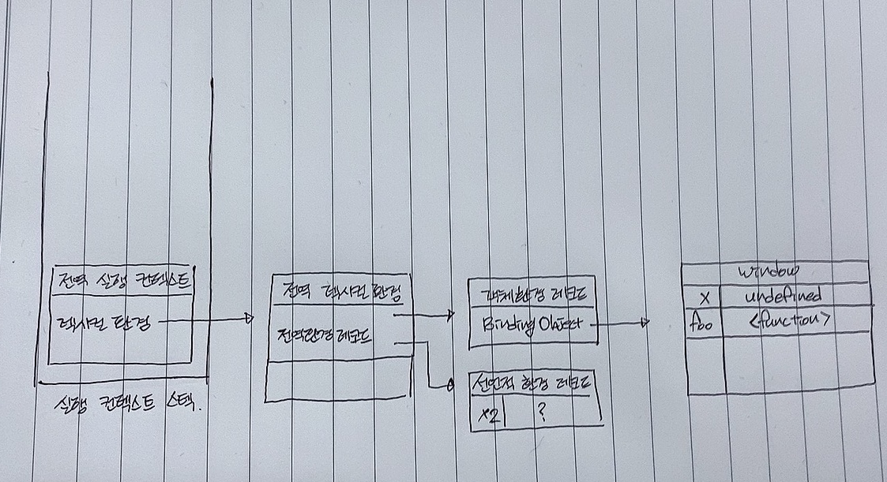
그리고 this가 바인딩되는데 전역 렉시컬 환경의 [[GlobalThisValue]] 내부슬롯에 this가 바인딩된다.
전역 코드에서의 this는 전역 객체를 가르키기 때문에 전역객체 window가 바인딩 된다.
외부 렉시컬 환경 참조는 현재 평가중인 소스 코드를 포함하는 외부 소스 코드의 렉시컬 환경인 상위 스코프를 가르키는데 전역의 경우 null이 할당된다.
전역 코드 평가 이후 전역 코드가 실행이 되게 되는데 이때 선언만 되었던 변수 값들에 값이 할당이 되게 된다!
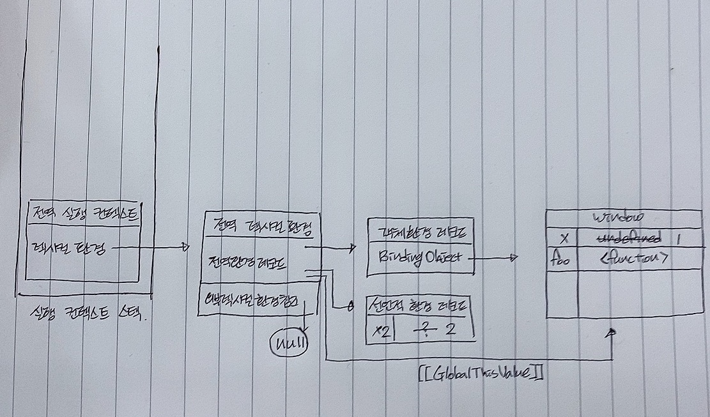
함수코드의 경우 함수가 호출될때 함수 실행 컨텍스트가 생성이 된다.
코드의 마지막 부분에 foo함수를 호출하는데 이때 전역 코드의 실행을 일시 중단하고 foo함수로 제어권이 이동한다.
이때 함수 내부 코드가 평가된다.
함수 실행 컨텍스트가 생성이 되고, 함수 렉시컬 환경 생성, 함수 환경 레코드가 생성된다
함수도 마찬가지고 평가될때 선언문들이 먼저 등록이 된다.
따라서 const x3 = 3;의 const 키워드로 선언된 x3(const x3)가 함수 환경 레코드에 등록이 된다.
함수의 매개변수, argument 객체, 함수 몸체 내부에서 선언된 식별자들이 함수 환경 레코드에 등록이 된다.
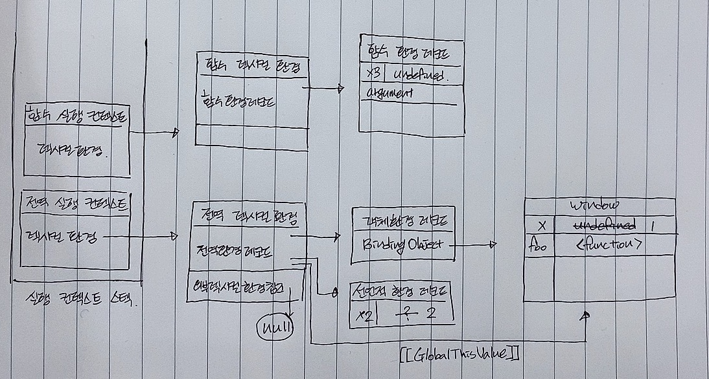
이후 this가 바인딩 되는데 이때 foo 함수는 일반함수로서 호출되었기 때문에 this는 전역 객체가 된다.
함수의 외부 렉시컬 환경에 대한 참조는 자바스크립트 엔진이 함수 정의를 평가하고 함수 객체를 생성할때 실행중인 컨텍스트의 렉시컬 환경을 함수 객체의 내부슬롯 [[Environment]]에 저장한다.
이후 함수 렉시컬 환경에 있는 외부 렉시컬환경에 대한 참조는 이 함수의 내부슬롯 [[Environment]]를 참조한다. 따라서 위 코드를 기준으로 foo 함수의 외부 렉시컬 환경에 대한 참조는 전역 렉시컬 환경을 가르킨다.
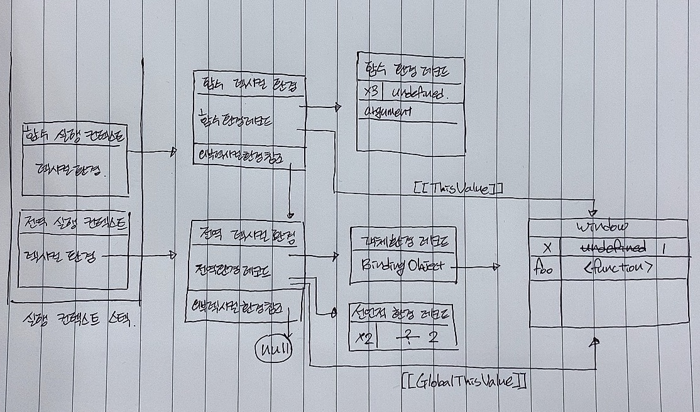
함수 내부 평가 이후 함수 코드를 실행하면서 함수 환경 레코드에 존재하는 변수 x3에는 3이 할당되고 console.log(x3)가 실행되는데 이때 console의 log 메서드를 호출 즉, 함수 호출이기 때문에 또 다시 실행 컨텍스트가 만들어진다.
이때 `console` 객체는 window 객체가 만들어질때 내부에 존재하기 때문에 전역 객체(window)에서 `console`을 찾아 `log` 함수를 평가하는 과정을 거친다.
내부적으로 인수를 받기 때문에 해당 인수가 log 함수 환경 레코드에 등록되기 전에 log 함수 실행 컨텍스트가 생성되고, 함수 렉스컬 환경, 함수 환경 레코드들이 생성이 되고 선언문들이 함수 환경 레코드에 등록이 된다.
(내부적으로 console.log로 찍을 변수를 xxx라는 변수라고 가정함 - argument를 이용해서 출력할지도 모르겠다는 생각을 한다!)
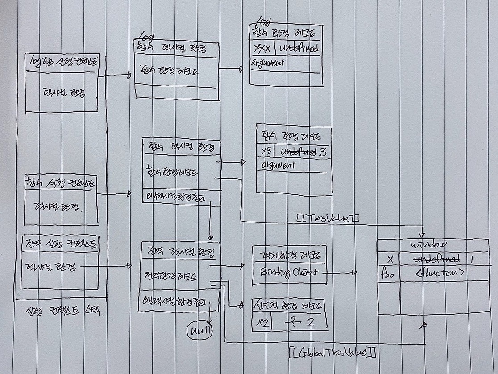
log 함수 렉시컬 환경의 [[ThisValue]]에는 전역객체 window의 console 객체가 바인딩 된다.
외부 렉시컬 환경에 대한 참조에는 현재 실행중인 실행 컨텍스트가 foo 함수의 실행 컨텍스트 이므로 foo함수의 렉시컬 환경을 가르키게 된다.
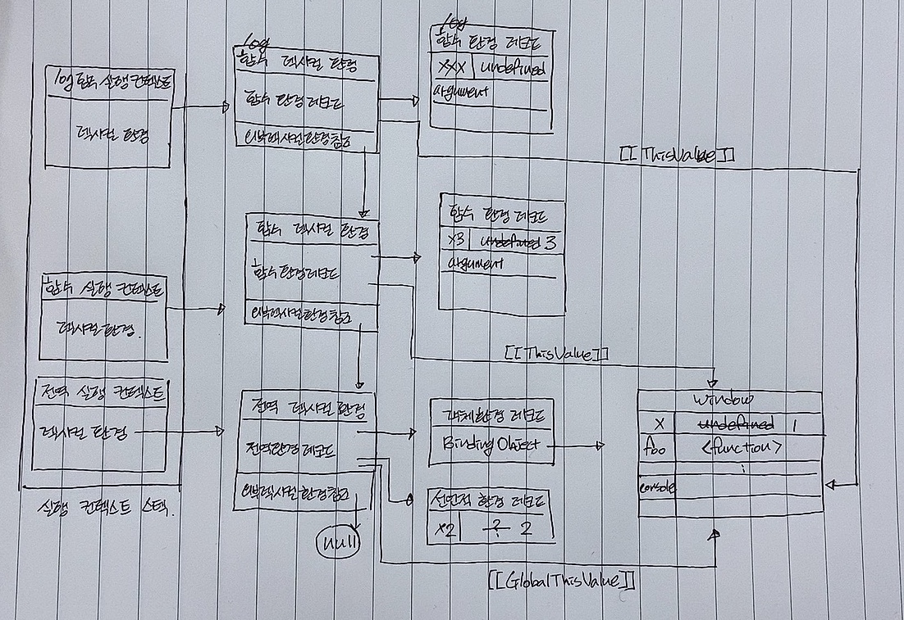
log 함수의 평가가 종료되고 실행되면서 xxx에는 인수로 넣어준 3이 할당이 되고 내부 동작으로 인해 console에 3이라고 찍히게 된다.
log함수가 종료가 되면 log 함수의 실행 컨텍스트가 실행 컨텍스트 스텍에서 제거된다. 이때 렉시컬 환경이 바로 사라지지는 않는데 이는 클로저와 연관된다.
log 함수의 실행 컨텍스트가 제거되고, foo 함수도 종료되므로 실행 컨텍스트 스텍에서 제거, 전역 실행 컨텍스트도 마찬가지로 제거되므로 실행 컨텍스트 스텍에는 아무것도 남지 않게 되고 이는 코드의 종료를 말한다.
결국 실행 컨텍스트 스텍에서 가장 상단에 존재하는 실행 컨텍스트가 현제 실행중인 실행 컨텍스트이고, 실행 컨텍스트가 존재할때 코드가 실행됨을 알 수 있다.
이런 과정들을 거치면서 자바스크립트 코드가 실행이 되는데 그렇다면 피보나치 수열의 경우 반복해서 재귀함수를 호출하는데 이때는 어떻게 되는지 찾아봤다.
피보나치 수열은 0과 1로 시작해서 다음 피보나치 수열의 수는 앞의 두 수를 더한 값이 된다.
간단하게 F로 나타내서 4단계의 피보나치 수열로 그림을 그려보면 다음과 같다.
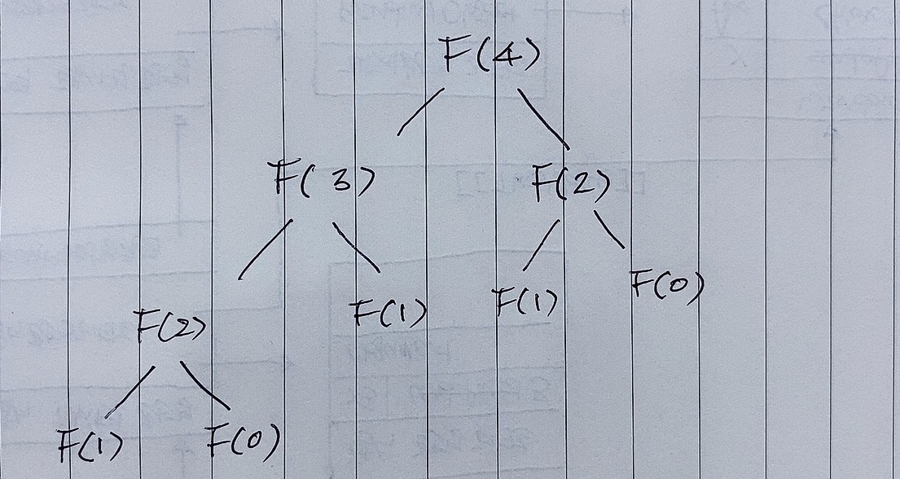
자바스크립트를 이용해서 피보나치를 간단하게 구현했을때는 다음과 같다.
function fibonacci(n) {
if (n <= 1) return n;
return fibonacci(n - 1) + fibonacci(n - 2);
}
console.log(fibonacci(10)); // 3
위 코드에 if문과 debugger를 이용해서 피보나치 함수가 크롬 브라우저에서 실행될때 실행 컨텍스트(call stack)가 얼마나 쌓이는지 확인해보았다.
function fibonacci(n) {
if (n <= 1) return n;
if (n === 2) debugger;
return fibonacci(n - 1) + fibonacci(n - 2);
}
console.log(fibonacci(4));
4번째 수를 찾을때 n이 2일때를 확인해보면
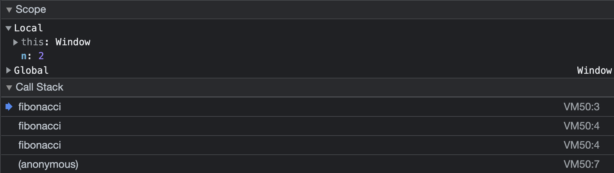
이어서 10번째 수를 찾을때 n이 2일때를 확인해보면
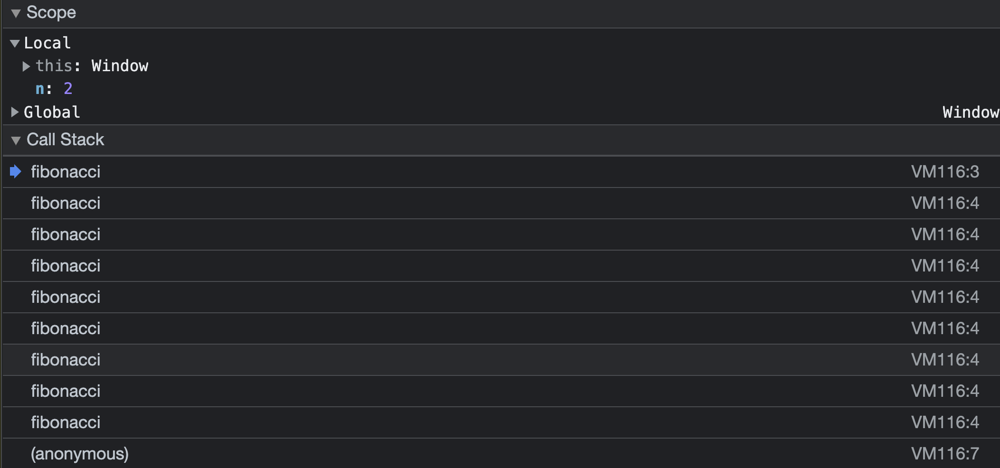
콜스텍이 게속 만들어 진 것을 알 수 있었는데 그렇다면 왜 그런걸까를 생각해보았다.
피보나치 수열 코드에서 먼저 전역 코드가 평가가 되면서 실행 컨텍스트 스텍에 전역 실행 컨텍스트, 전역 렉시컬환경, 전역 환경 레코드, 객체 환경 레코드, 선언적 환경 레코드가 생성되고, 전역 객체(window)의 메서드로 fibonacci 함수가 등록된다. 또한 this 바인딩은 전역객체가, 외부 렉시컬 환경에 대한 참조에는 null이 할당될 것이다.
이후 피보나치 함수가 호출이 되면서 피보나치 함수 실행 컨텍스트가 만들어지고 내부적으로 함수를 호출하면서 반환한다
n이 2인 경우에 debugger을 하므로 다음 그림과 같이 호출된다.
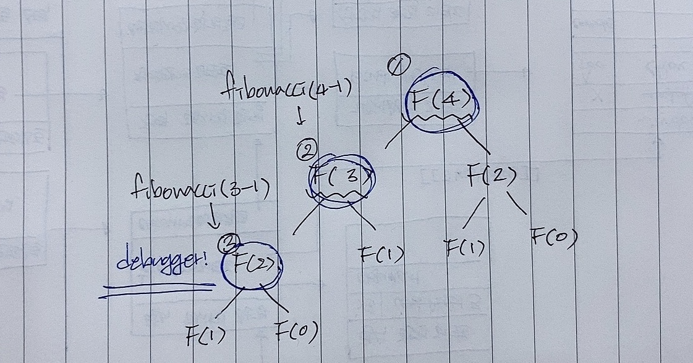
F(4), F(3), F(2) 순서로 호출이 된다. 따라서 결국 실행컨텍스트는 다음과 같이 구성된다.(F(4), F(3), F(2) 순서로 실행 컨텍스트 스텍에 각각의 실행 컨텍스트가 생성된다.)
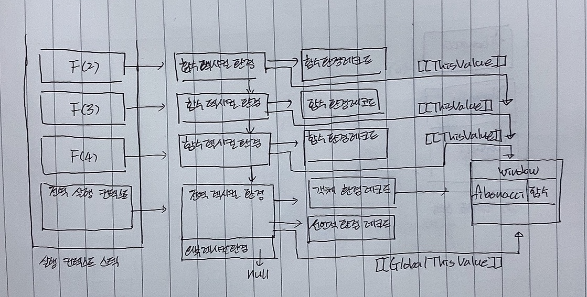
실행 컨텍스트를 그림으로 그리면서 공부를 하니 보다 쉽게 접근할 수 있었다고 생각한다. 아직도 굉장히 어려운 개념이지만 스코프, 클로저 등 많은 개념들이 연관되어 있기 때문에 이상함을 느낄때 그림을 그려보면서 잘못된 부분을 찾아가는 것도 좋은 방법이라는 생각이 들었다!